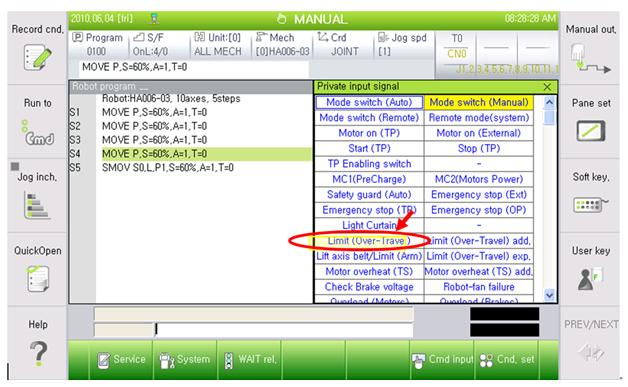
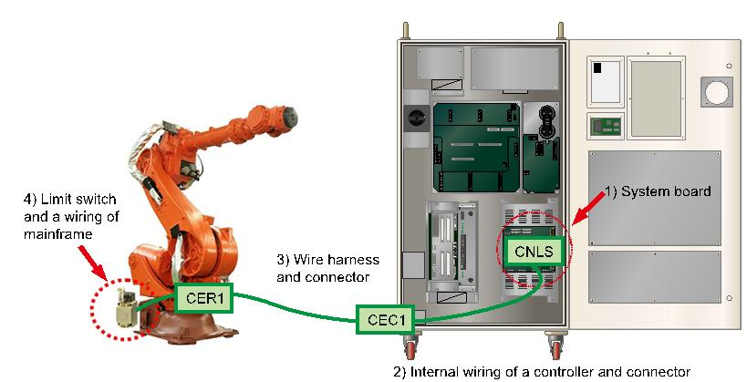
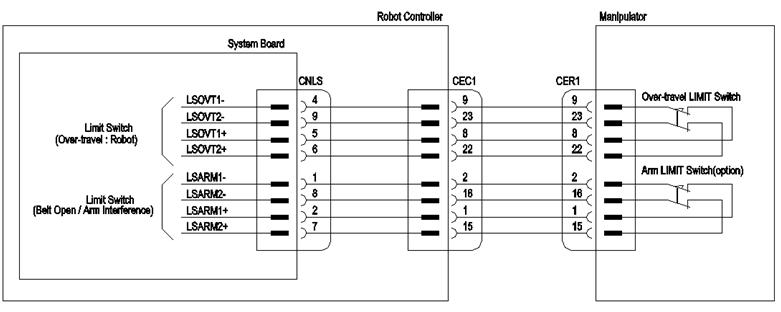
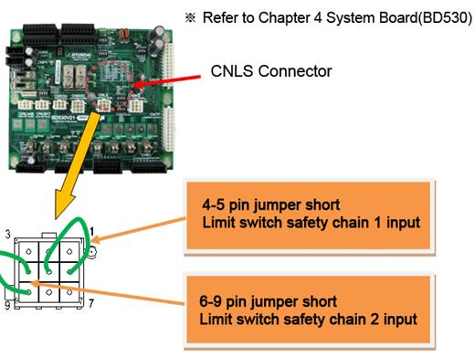
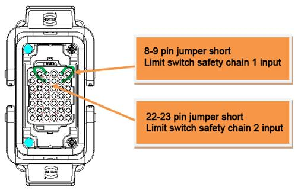
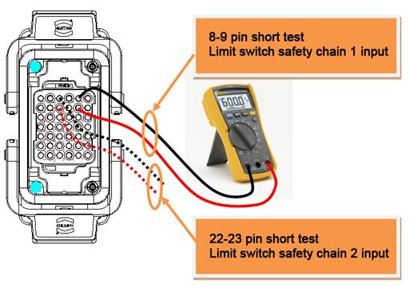

Warning
Please make sure the power of a controller has been completely turned off before you connect or remove any cables. Electrocution may cause personal injuries or a property damages
Refer to the following description regarding the methods for checking when the hardware limit is not operating normally.
(1) Switch state monitoring
The hardware limit input state can be checked through the specific input signal window of the teach pendant.
This window can be accessed by selecting ¡°¡º[F1]: Service¡» ¡æ ¡º1: Monitoring¡» ¡æ ¡º2: Input/output Signal¡» ¡æ ¡º1: Private input signal¡»¡±
If the limit (overtravel) item is displayed in yellow, it means that the hardware limit switch is in operation (open); in other words, the robot deviated from the hardware operation area..
n Cautions:
On manual mode, a monitoring is enabled only when a Teach Pendant¡¯s enabling switch is on. On automatic mode, a monitoring is enabled regardless of a status of enabling switch.

Figure 1.128 Display of the hardware limit switch input state (screen of the teach pendant)
(2) Wiring structure of the hardware limit switch
Understanding the wiring structure is required to find out the cause among the components related to the limit switch. As shown in the following figure, the limit switch is connected from the limit switch inside the mechanical main body, through a cable, to the system board inside the controller.
n Limit switch and mechanical main body wiring
n Wire harness and connectors (CER1 – CEC1)
n Controller internal wiring and connectors (CEC1 – CNLS)
n System board (BD530)

Figure 1.129 Wiring structure of the hardware limit switch

Figure 1.130 Details of the hardware limit switch wiring
(3) Methods for checking the hardware limit switch
n Checking method from a System Board Connector (CNLS)
|
Warning Please make sure the power of a controller has been completely turned off before you connect or remove any cables. Electrocution may cause personal injuries or a property damages |
This method uses a CNLS connector of System Board to judge if the board malfunction caused this error.
Please jumper short the pins that are related to the limit switch¡¯s input from a CNLS connector as shown below. At this stage, please check the limit (Over-Travel) from the Private input signal monitoring windows.
¨ç If it turned to a white color, System Board malfunction caused this error. Please replace the board.
¨è If it is still yellow which indicates that the error persists, Please search a problem that caused this error in an area between the system board and the limit switch of main frame

n Checking method from a Wire Harness (CER1 or CEC1)
|
Warning Please make sure the power of a controller has been completely turned off before you connect or remove any cables. Electrocution may cause personal injuries or a property damages |
This method uses a Wire Harness connector (CER1 or CEC1) to judge if the cable malfunction caused this error.
Please remove CEC1 Wire Harness, and jumper short the pins that are related to the limit switch from a CEC1 connector which is attached to a controller. At this stage, please check the limit (Over-Travel) from the Private input signal monitoring windows.
¨ç If it turned to a white color, internal CEC1 Connector (of a controller) - System Board cable or a connector malfunction caused this error. Please examine them or replace them.
¨è If it is still yellow which indicates that the error persists, please search a problem that caused this error in an area between the CEC1 connector and the limit switch of main frame.
Please reconnect CEC1 Wire Harness, and remove the CER1 Wire Harness from a main frame. After that, please jumper short the pins that are related to a limit switch from a CER1 connector.
At this stage, please check a limit (Over-Travel) from the Private input signal monitoring windows.
¨ç If it turned to a white color, Wire Harness cable between CER1 Connector-CEC1 Connector or a connector malfunction caused this error. Please examine them or replace them.
¨è If it is still yellow which indicates that the error persists, please search a problem that caused this error in an area between the mainframe sides¡¯s CER1 connector and the limit switch.

n Checking method by examining a limit switch and internal wiring of main frame
|
Warning Please make sure the power of a controller has been completely turned off before you connect or remove any cables. Electrocution may cause personal injuries or a property damages. |
Please remove the CER1 Wire Harness from a main frame, and use a multi meter to run a short (shortage) test to examine the lines that are related to the limit switch from a main frame¡¯s CER1 connector.
¨ç If resistance is measures as open status, limit switch or a limit switch – CER1 connector or a connector malfunction is suspected. Please examine or replace them.
¨è If resistance is measured as short (shortage) status, other parts need to be examined. Please make an enquiry to our office.
